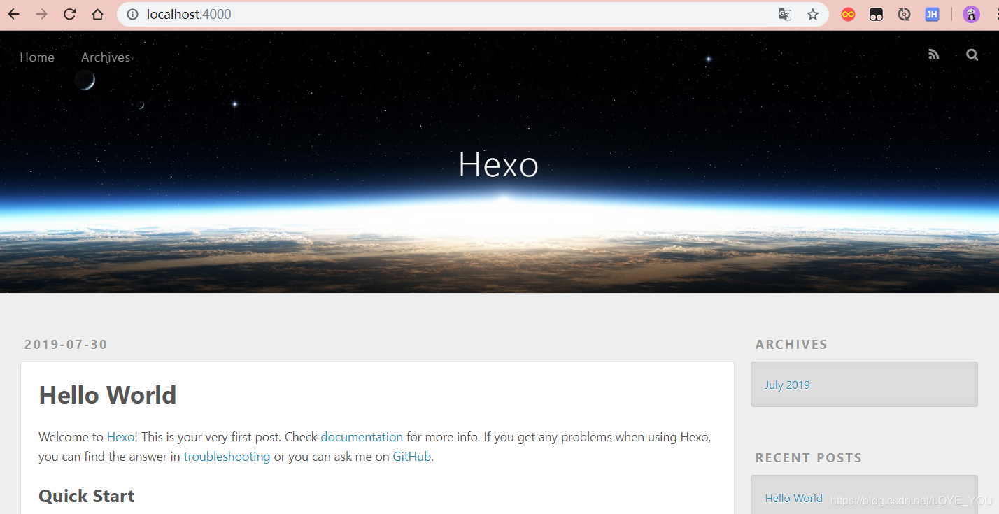
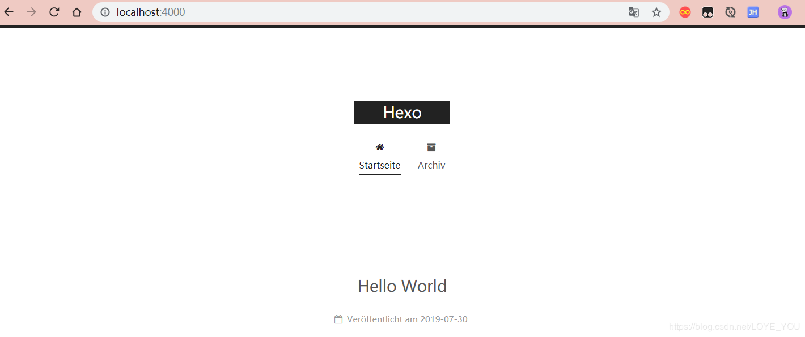

小编的个人博客站点也是有大佬指点的，在这里小编就在网上总结一些搭建教程，分享给大家。
这篇博客主要介绍个人博客站点搭建的情况，小编的还有一篇博客介绍的博客备份管理一文，有兴趣的朋友可以两篇文章一起看。
准备工作
现在搭建一个个人独立博客，可选方案很多，小编就以 Hexo 为例来搭建，用 Hexo 搭建需要提前在电脑上安装好 Node 和 Git ，关于 Node 和 Git 的安装，小编在这里不多说，情去下面的官方网站下载即可：
安装 Hexo
安装成功后，就可以开始 Hexo 的安装了。步骤如下：
1、安装 Hexo
1 | npm install -g hexo-cli |
2、在本地创建一个本地博客目录
1 | # blog 这个目录名称可以任意起 |
上面的命令执行完成后，会在本地创建一个 blog 目录，这里边就是独立博客所必须的一些文件，然后进入到这个目录中，执行如下命令，安装相关的依赖：
1 | #进入我们刚刚创建的目录 |
此时，我们本地 blog 目录下多出来了几个文件夹以及文件，这时我们只需要关注其中两个 _config.yml 、themes 目录。
_config.yml：主要做网站的一些基本配置，例如网站的 title 、描述、关键字、图标等。themes：主要配置我们网站使用的主题，后期详细讲解。
此时我们就可以执行 hexo s 命令在本地启动我们的项目，启动成功后，浏览器中输入 http://localhost:4000 就可以看到网站了。

说到 hexo s 命令，这里有几个常用命令需要给大家介绍下，分别是：
| 命令 | 简写 | 中文含义 |
|---|---|---|
| hexo server | hexo s | 本地启动 |
| hexo generate | hexo g | 生成静态文件 |
| hexo deploy | hexo d | 部署网站 |
| hexo clean | 清除缓存和已经生成的静态文件 |
改变主题
我们上面看到的是默认的主题 landscape ，这里小编个人感觉有点不适合小编个人的风格，小编这里就使用了网上最流行的 hexo-theme-next 主题。如果想了解其它主题，可以自行在网上找，很多的。
1、首先，我们要把选好的主题克隆到 ./themes 目录下，其中的 landscape 便是我们项目默认的主题，执行如下命令进行 next 主题克隆：
1 | # 切换到 themes 目录下 |
克隆完成后，我们就会发现 themes 目录先已经多了一个文件夹，下面我们对 _config.yml 文件，在该文件的最低处，修改内容如下：
1 | # Extensions |
这时，我们就可以根据官方文档进行主题配置，下面我们先启动项目，查看一下新的主题效果：
1 | hexo clean |

本文小编早就写过了，一直没发布到这个个人博客站点上，这时候才发出来，小编前面也说了，可以和小编之前的一篇文章一起看，根据个人需求来搭建，本文就到此结束！！！